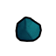
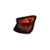
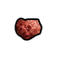

原料级·无档·钛磁铁矿（铁，钛，钒） Titanomagnetite
不可塑形仅配方原料 价值3 质量0.25 护甲—/—/— 利钝—/—
Vile's Materials Science · 未标注 · Things/Item/Ores/Rutile

原料级·无档·铝土矿 Aluminium
不可塑形仅配方原料 价值2 质量0.10 护甲—/—/— 利钝0.60/0.90
Core_SK · 未标注 · Things/Item/Ores/Bauxite

原料级·无档·闪锌矿（锌，锰，钴） Sphalerite
不可塑形仅配方原料 价值25 质量0.25 护甲—/—/— 利钝—/—
Vile's Materials Science · 未标注 · Things/Item/Ores/Tin